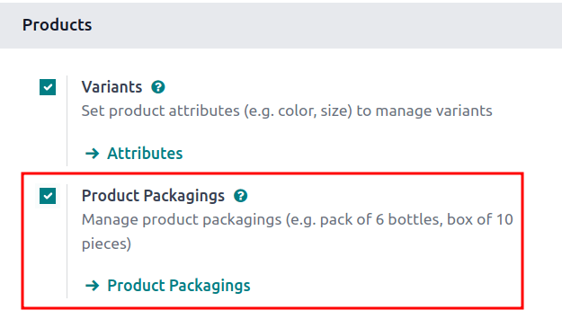
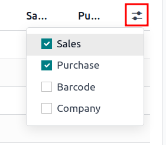

Empaquetado¶
In Odoo Inventory, packaging refers to disposable containers holding multiple units of a specific product.
For example, different packages for cans of soda, such as a 6-pack, a 12-pack, or a case of 36, must be configured on the individual product form. This is because packagings are product specific, not generic.
Truco
Puede utilizar los empaquetados junto con la aplicación Código de barras de Odoo. Al recibir los productos de los proveedores, el número de unidades del empaquetado se agrega de forma automática al número interno del producto si escanea el código de barras en el empaquetado.
Configuración¶
Vaya a para utilizar embalajes. En la sección Productos marque la casilla Empaquetado de los productos y haga clic en Guardar.
Crear embalajes¶
Es posible crear embalajes desde el formulario del producto o desde la página Empaquetados de los productos.
Desde el formulario del producto¶
Para crear embalajes en el formulario de un producto vaya a y seleccione uno.
En la pestaña Inventario, diríjase a la sección de Empaquetado y haga clic en Agregar una línea. Complete los siguientes campos en la tabla:
Embalaje (obligatorio): nombre del embalaje que aparece en las órdenes de venta o compra como una opción de embalaje para el producto.
Cantidad incluida (obligatoria): cantidad de producto en el embalaje.
Unidad de Medida (obligatoria): unidad de medida para cuantificar el producto.
Ventas: seleccione esta opción si se trata de un embalaje que se utilizará en órdenes de venta.
Compra: seleccione esta opción si se trata de un embalaje que se utilizará en órdenes de compra.
Nota
Puede acceder a campos adicionales en la tabla de empaquetado si hace clic en el icono (deslizadores) que está ubicado en la parte derecha de los títulos de las columnas en la sección de Empaquetado, allí seleccione las opciones deseadas en el menú desplegable que aparece.
Código de barras: identificador para rastrear el empaquetado en movimientos de existencias o elaboración de órdenes con la aplicación Código de barras. Deje el campo vacío si no utiliza uno.
Empresa: indica que el empaquetado solo está disponible en la empresa seleccionada. Deje el campo vacío para que el empaquetado esté disponible en todas las empresas.
Example
Para crear un tipo de embalaje para seis unidades del producto Refresco de uva primero haga clic en Agregar una línea. En la línea, nombre al empaquetado como Paquete de 6 y establezca la Cantidad incluida en 6. Repita este proceso para todos los embalajes adicionales.

Desde la página de embalajes del producto¶
Para visualizar todos los embalajes creados vaya a . Esta acción abrirá la página de Empaquetado de los productos con una lista completa de todos los embalajes creados para todos los productos. Para crear un nuevo empaquetado, solo haga clic en Nuevo.
Example
Dos productos de refresco, que son Refresco de uva y Refresco de dieta, tienen tres tipos de empaquetado configurados. En la página Empaquetado de los productos cada producto se puede vender como un Paquete de 6 que incluye 6 productos, Paquete de 12 con 12 productos o una Caja con 32 productos.
Partial reservation¶
After completing the packaging setup, packagings can be reserved in full or partial quantities for outgoing shipments. Partial packaging flexibility expedites order fulfillment by allowing the immediate shipment of available items, while awaiting the rest.
To configure packaging reservation methods, go to . Then, click New, or select the desired product category.
On the product category’s form, in the Logistics section, Reserve Packagings can be set to Reserve Only Full Packagings or Reserve Partial Packagings.
Importante
To see the Reserve Packaging field, the Product Packaging feature must be enabled. To enable this feature, go to , scroll to the Products section, tick the Product Packagings checkbox, and click Save.

Example
To better evaluate the options based on business needs, consider the following example:
a product is sold in twelve units per packaging.
an order demands two packagings.
there are only twenty-two units in stock.
When Reserve Only Full Packagings is selected, only twelve units are reserved for the order.
Conversely, when Reserve Partial Packagings is selected, twenty-two units are reserved for the order.
Aplicar empaquetados¶
Especifique los embalajes que se deben usar para los productos al crear una orden de venta en la aplicación . El embalaje elegido aparece en la orden de venta en el campo Empaquetado.
Example
18 latas del producto Refresco de uva. Este se envasa con tres paquetes tipo six-pack.